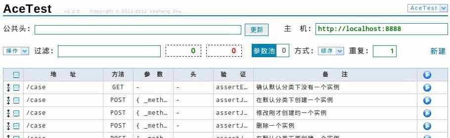
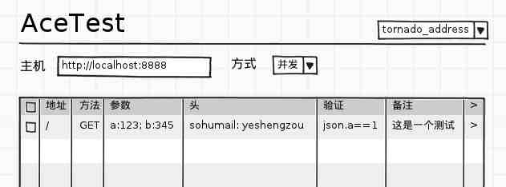
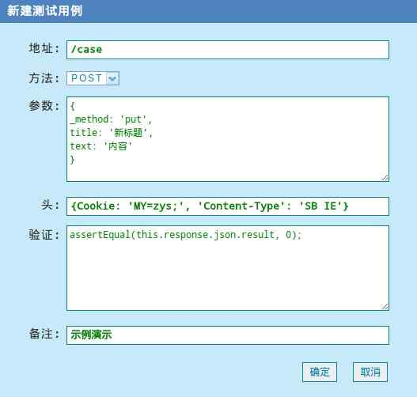
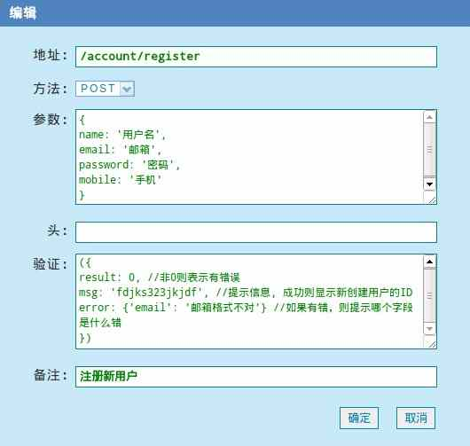
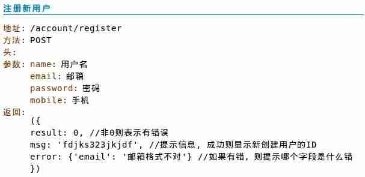

AceTest HTTP请求处理工具
- 2012-03-14 17:37
- 邹业盛 / yeshengzou # # gmail.com
关于
AceTest 是我近期做的小工具，其实比较早之前就做好了一版，自己用了一段时间。然后，根据自己的使用感觉，好好重构了一番，现在把它放到 Github 上了：
https://github.com/AceFantasy/AceTest
如果要一句话来说明 AceTest 是做什么的，那么就是“模拟 HTTP 请求”——好吧，虽然我自己也不喜欢这种叫法，但是，它做的事也确实是这个。
AceTest 是一个 Web 应用工具，你可以在页面上方便地定义一个 HTTP 请求（地址，参数，头什么的），然后将这个请求发出，当然，这个请求不是直接发到你指定的地址，而是发到服务器端，服务器端通过一个 HTTPClient 再把请求发到指定的地址，获取响应后，把响应返回给你。之后，你可以定义一些函数对响应的结果进行检查，以此，可以达到测试的目的。
同时，因为你已经定义好了 HTTP 请求，所以， AceTest 可以依此，来自动生成描述 HTTP 接口的文档。
安装运行
AceTest 的后端使用的是 Tornado ，前端的 js 部分使用的是 Dojo 。同时，使用了 Django 的 ORM 部分来进行对数据库的访问（不好意思，我懒:) ）。
所以，此项目要跑起来，需要：
然后就可以像普通的 Tornado 项目一样启动了：
$ python server.py
启动时现在支持了两个可选的参数：
- port 指定端口
- db 指定数据库文件
所以，可以这样：
$ python server.py --port=80 --db=/home/zys/acetest.sqlite3
缘起
想到做 AceTest ，和平时的工作有关。因为维护着 Web 项目，而常常项目需要和外部服务交互，时不时出现问题需要快速确认外部服务的响应内容。很显然，要看到响应内容，不是把一个 URL 复制到浏览器就可以解决问题了的，方法啊，参数啊之类的东西都要正确才行，而有时，它们还很复杂。
之前我一直是自己会写一个 Python 文件放在那里，有什么问题直接修改 Python 文件然后跑一下。当然，这本来没有什么大问题，只是每次新写的时候会觉得好折腾，我并不是把 httplib 这个模块的用法记得很熟。
另外就是，自己写东西时，喜欢一种前后端完全分割的方式，先专注写后端逻辑，直接返回 json 格式的数据，然后已经完成的功能，希望可以使用规范的文档来描述 HTTP 接口，倒不是说需要给别人看，以后自己维护时也方便。不过每次写这些文档，都觉得是很费劲的事。
我的第一份是工作是做桌面软件的自动化测试相关的内容，那时做了一个类似的东西。现在回想起来，形式是可以参照的，但是 HTTP 请求处理起来就简单很多了。使用 Tornado 自己的 HTTPClient 配合异步回调机制，很容易实现一个代理访问的模型。
于是就这样开始了。定义一个 HTTP 请求，然后让后端的 Tornado 执行它，把结果返回给我。最初的构想就是这样。
对于响应，直接使用 js 进行简单的判断，来提示是不是我期望的结果，这样，就达到的测试的目的。
再后来，对于已经定义好的 HTTP 请求，格式化一下，就是一份清晰描述的接口文档。
其实整个项目要做的事实现起来很简单，至少后端是这样的。很大部分的精力都是花在前端写 js 交互部分了。

最初的想法是这样的。

第一版时的样子，比现在要简陋多了。不过，基本的功能算是都实现了的。
新建/编辑实例
1 2
点击 1 “新建”，或者双击已经存在的实例 2，都会弹出实例编辑窗口：

- 地址：请求要访问的 URL 地址，可以是一个相对根的 URL ，如 /case ，也可以是一个完整的 URL ，如 http://zouyesheng.com 。如果是相对 URL ，则会自动根据“主机”补全成绝对 URL 。“主机”为空时，默认使用 http://localhost:8000 。
- 方法： HTTP 的访问方法。
- 参数：请求要带的参数，填写格式为 json 对象。
- 头：请求出去时要附带的头信息，填写格式为 json 对象。
- 验证：填写的内容为函数体，后面会详细介绍。
- 备注：说明文字。
填写完点击“确定”时，系统会自动对填写内容作格式检查，如果有错误，则不会提交并提示错误。
验证
“验证”处填写的内容，实际上是一个函数体，当请求正确返回时，其响应的内容会被动态绑定到以“验证”内容为函数体的一个匿名函数中执行，根据此匿名函数抛出的异常进行请求成功与否的判定。
所以：
- 验证处只是被要求写函数体，你可以写任何的 js 语句，使用任何的函数。
- 要正确触发“错误判断”，则代码中需要抛出特定的异常。
相关的代码放在 /static/js/check.js 之中，“特定的异常”即为：
var AceTestError = function(msg, should, actual){
var o = {};
o._type = 'AceTestError';
o.msg = msg;
o.should = should;
o.actual = actual;
return o;
}
在 check.js 已经写了几个断言函数，比如判断两个值是否相等的 assertEqual ：
//检查数据相等
var assertEqual = function(v, n, msg){
if(msg == undefined){msg = '数据相同检查失败'}
if(v != n){
throw AceTestError(msg, n, v);
}
}
你可以根据需要自行扩充需要的“断言函数”。
在验证中，另外一个用户需要关心的是，“响应体”这个上下文，它会被绑定到验证函数中执行，比如，验证处的内容可能是这样：
assertEqual(this.response.json.result, 0);
它判断返回结果中的 result 这个值是不是为 0 。
this 就是“响应体”上下文，它的内容是：
{
msg: '', //后端返回的提示信息
result: '', //后端返回的结果标识，成功为0
request: { //发出的请求
body: '', //参数
headers: [], //头
method: '', //方法
url: '' //请求的地址
},
response: { //请求的响应信息
body: '', //响应的内容
code: '', //状态码
error: '', //错误信息（如果有的话）
headers: [], //头
json: '', // body 对应的 json 结构（如果是 json 数据的话）
request_time: '', //请求处理所用时间
time_info: { //时间详细信息
connect: '',
namelookup: '',
pretransfer: '',
queue: '',
redirect: '',
starttransfer: '',
total: ''
}
}
}
运行实例
运行实例有三种方法：
a b c
- 点击“b”，运行对应的实例一次。
- 点击“a”，运行所有勾选的实例。
- 点击“c”，直接在新窗口中访问实例。
点击“c”的情况，相当于直接向指定的 URL ，以指定的方法提交了一个表单。请求不会经过 AceTest 的后端。开发过程中，可以使用这种方式直接查看 POST 请求的错误信息页。
其它工具栏
A B C D E F G H
- H 分类。你可以在这里创建和管理分类。对于每一个分类，可以单独设置“公共头”和“主机”。默认的位置是在“未分类”当中。
- A 公共头。和实例中的头作用一样。这里的设置会应用于每一个实例请求当中。另外，公共头中会处理两个特殊的头， Referer 和 Cookie ，当你访问一个 URL 后，公共头中会自动添加一个 Referer 头，值为你访问的 URL 。如果请求的响应当中有 Set-Cookie 的话，那么公共头当中也会自动设置相关的 Cookie 值。这样，下次访问时 Referer 和 Cookie 都会带上了，像在浏览器当中的行为一样。公共头不会自动保存，如果你需要为当前分类保存公共头，需要点击一下右边的“更新”。
- B 主机。相当于当前的 HOST 设置。如果实例中的地址为相对 URL 的话，则会应用此设置转成绝对 URL 。针对分类的主机设置会即时自动保存。
- C 过滤。对当前页面上的实例，根据“地址”和“备注”的即时搜索。
- D 计数器。绿色表示成功的请求，红色需要失败的请求。点击后清零。
- F 运行方式。指定多个实例的运行方式，有“顺序”和“并发”两种。
- G 重复次数。指定多个实例运行时，需要跑多少次。
- E 参数池。保存在“验证”中使用函数设置的变量，这些变量可以在“参数”中直接引用。后面会详细介绍。
参数池
“参数池”的设计，是为了在请求之间实现“参数传递”的目的。
比如，为了测试删除文章的功能，需要做的是：
- A 实例创建一篇文章，这时，响应中会包括新建文章的 ID 。
- B 实例去删除刚才创建的文章，但是，它需要知道文章的 ID 啊。
那么，这个 ID 的传递，就可以使用“参数池”实现。
之前说过，在“验证”中的内容为函数体，你可以使用任意的 js 语句， AceTest 提供了一个函数用以维护“参数池”中的变量：
//向参数池当中添加一个参数
var add_var = dojo.hitch({n: undefined}, function(name, value){
if(!this.n){
this.n = dojo.byId('var_pool');
this.n.var = {};
}
if(name == ''){return my_alert('参数名不能为空')}
this.n.var[name] = value;
dojo.publish('VAR_POOL_CHANGE');
}
);
add_var 这个函数，就可以向参数池当中添加一个变量（同名会覆盖），比如在 A 实例的验证中写：
add_var('aid', get_attr(this.response.json.blog, 'id'));
这样，就在参数池当中，设置了一个名为 aid 的变量。
在定义另外一个 B 实例时，参数中可以写成：
{
id: %(aid)s
}
这样就可以直接引用参数池中的 aid 这个变量了。（显然， B 实例需要在 A 实例之后执行才可以，“顺序”的方式运行即可）
上面的验证中使用了 get_attr 这个函数，用以从对象中获取指定属性的值。不能直接使用 this.response.json.blog.id 获取，因为在定义阶段 json 中的数据格式是不确定的，json.blog 是一个未定义量，json.blog.id 无法通过系统的数据有效性验证。
导出接口描述文档
AceTest 另外一个重要的功能，就是可以直接导出定义的 HTTP 请求实例的描述性文档。先勾选需要导出的实例，然后点击“操作”下的“导出接口文档”即可。
一般，我们可以根据接口文档的需要，单独定义一份实例，使用“验证”来描述返回值，比如：

因为“验证”中的内容为函数体，所以这样写只是定义了一个不会被引用的结构，不会有任何问题。
导出后的样子：
